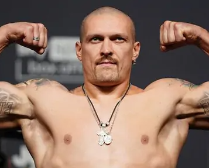

Украинский боксёр
Алекса́ндр Алекса́ндрович У́сик (укр. Олександр Олександрович Усик; род. 17 января 1987, Симферополь, Украинская ССР, СССР) — непобеждённый украинский боксёр-профессионал, выступающий в первой тяжёлой и тяжёлой весовых категориях. Лучший боксёр вне зависимости от весовой категории по версии журнала The Ring (2024—н.в.)[3]. Национальная легенда Украины (2024)[4]. Полный кавалер ордена «За заслуги». В профессиональном боксе действующий чемпионов мира по версиям WBC (2024—н.в.), WBA (2021—н.в.), WBO (2021—н.в.), IBO (2021—н.в.) и The Ring (2022—н.в.) в тяжелом весе. Абсолютный чемпион мира в первом тяжёлом (2018—2019) и в тяжёлом весе (2024). В финале турнира WBSS одержал победу над российским боксёром Муратом Гассиевым и стал абсолютным чемпионом, завоевав титулы чемпиона мира по версиям IBF (2018—2019) и WBA super (2018—2019), объединив их с выигранными ранее чемпионскими поясами по версиям WBO (2016—2019) и WBC (2018—2019). Кроме этого, он стал обладателем Кубка Мохаммеда Али и титула чемпиона мира по версии боксёрского издания The Ring (2018—2019)[5] в крузервейте. В целом победил 7 бойцов за титул чемпиона мира в первом тяжёлом весе[6]. Чемпион Олимпийских игр 2012 года в весовой категории до 91 кг, чемпион мира 2011 года в той же весовой категории, чемпион Европы 2008 года в категории до 81 кг, неоднократный чемпион Украины среди любителей. Заслуженный мастер спорта Украины. Лучший профессиональный боксёр 2018 года по версии спортивного телеканала ESPN[7][8], спортивных журналов Sports Illustrated[9] и The Ring[10], Ассоциации журналистов Америки BWAA[11], изданий BoxingTalk[12], Yahoo Sports[13], WBC[14].
Алекса́ндр Алекса́ндрович У́сик — непобеждённый украинский боксёр-профессионал, выступающий в первой тяжёлой и тяжёлой весовых категориях. Лучший боксёр вне зависимости от весовой категории по версии журнала The Ring. Национальная легенда Украины. Полный кавалер ордена «За заслуги»